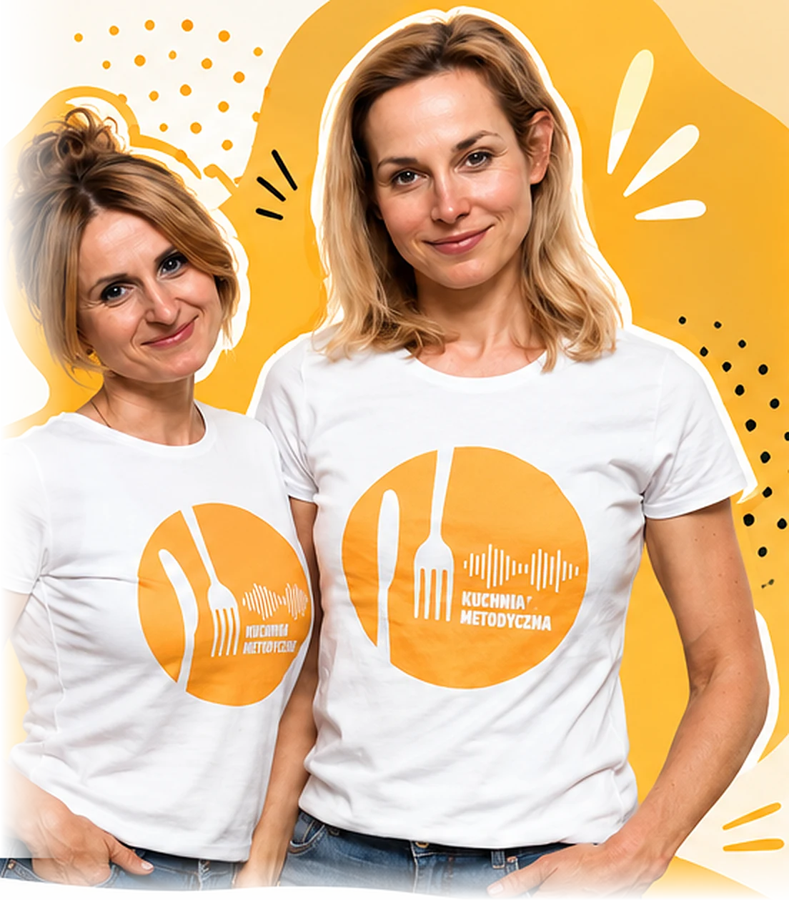

KuchniaMetodyczna
Tu łączymy doświadczenie, wiedzę i praktykę, żeby tworzyć lepsze lekcje językowe.
SŁUCHAJ PODCASTU
Co znajdziesz w Kuchni Metodycznej
PODCAST
Inspirujące rozmowy
o nauczaniu języków.O NAS
Dwie nauczycielki,
jedna wspólna pasja.SZKOLENIA
Praktyczna wiedza
dla nauczycieli.